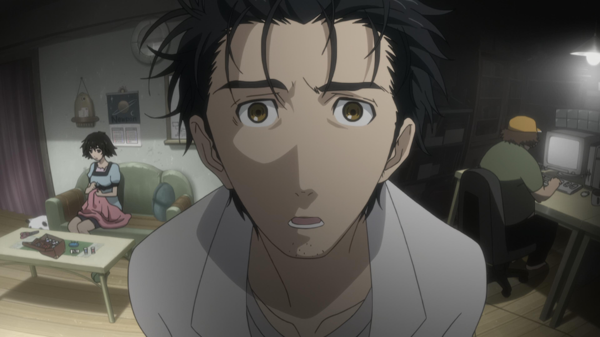

About Steins;Gate
ㅤㅤㅤSteins;Gate is an anime based off of a visual novel that goes by the same name. The premise of the show is that somehow a group of college aged students accidentally discover a method of time-line alteration where you are able to text a very short message to someone in the past and change the outcome of certain events that is referred to as a D-Mail (Delorean Mail), but only the main character Rintaru Okabe is actually able to witness the changes made by the D-Mails sent. As the story plays out, Okabe has to deal with the psychological torment and consequences of the many different alterations caused by changing the past with D-Mail, and eventually Okabe even finds himself and his friends in a dangerous situation involving a secret government organisation that is doing research related to time travel. You also get to witness Rintaru Okabe experience major character growth throughout the entirety of the series. Okabe starts out as a immature and delusional character who doesn’t take in consideration of the consequences of his actions early on in the story, but as the show progresses, Okabe starts to recognize that he needs to take his actions more seriously and ends up having to reverse many of the things he has done. The show also deals with a lot of interesting science fiction and scientific ideas, and the show is great at utilising its original score to really make the atmosphere authentic.
Important Characters of Steins;Gate
ㅤㅤㅤRintaro Okabe (Lab Mem 001), also nicknamed “Okarin”, is the main character of Steins;Gate. Okabe is a self-proclaimed mad scientist who seems to suffer from grandiose delusions and loves Dr. Pepper; but he is also really an intelligent person and is the founder of his “Future Gadget Lab” (a small apartment where he and some of the other members of his lab build mostly useless inventions using commonplace items and such). Mayuri Shiina (Lab Mem 002) is one of Okabe’s closest friends and is the source of most of the funds Okabe uses for his experiments. Mayuri is also into cute things and cosplay. Itaru “Daru” Hashida (Lab Mem 003), is also a close friend of Okabe and he is a great hacker. Daru is also obsessed with “Otaku” culture (being an otaku usually refers to a person being obsessed with anime, games, the internet, etc). Kurisu Makise (Lab Mem 004), also nicknamed “Christina” by Okabe, is a genius neuroscientist who spent a chunk of their life living in the USA and graduating university at the young age of seventeen. Kurisu also has a very serious personality and hates the many nicknames Okabe gives her.
- Steins;Gate Fan Wiki
- Steins;Gate (TV Series) Wikipedia
- Azumanga Daioh Wikipedia
- Azumanga Daioh Character Wikipedia